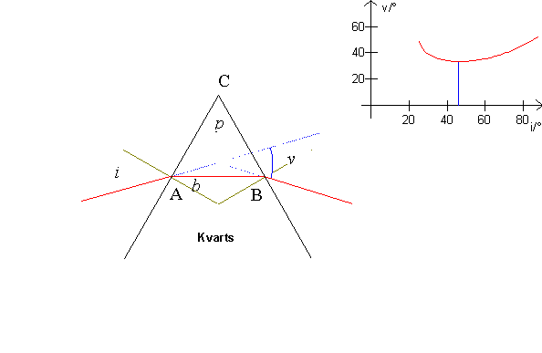
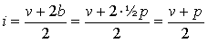
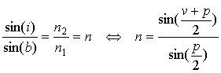
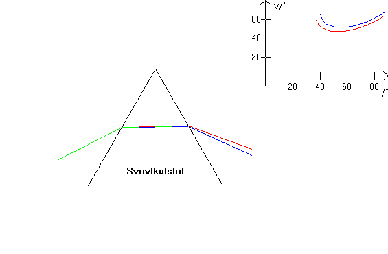
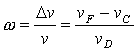

Bestemmelse af brydningsindeks

På figuren herover ses en stråle brydes i et prisme. Opstillingen er set fra oven. Desuden er indfaldsvinklen, i valgt således at strålegangen bliver symmetrisk i prismet, vi siger prismet står i hovedstillingen i forhold til strålen. Vinklen ACB kaldes den brydende vinkel, på figuren har jeg kaldt den p.
Når prismet står i hovedstilling kan brydningsindekset, n beregnes ved at måle vinklerne p og v.
I punktet A drejes strålen vinklen i - b og i B drejes strålen den samme vinkel. Vi har altså:
v = 2i - 2b
Desuden er brydningvinklen b = ½p, se figuren.
Vi isolerer i fra den første ligning og indsætter b:

herefter fås vha. brydningsloven:

.
Bemærk, at vinklen v har minimum ved hovedstillingen og at v ikke ændres ret meget, når indfaldsvinklen ændres. Se figuren øverst til højre.
Rødt lys rammer et prisme og indfaldsvinklen er 30°. Prismets brydende kant er 60° og dets brydningsindeks er 1,66.
Beregn strålens afbøjning i prismet.
Farvespredning

På dette billede er valgt to stråler en blå og en rød. Det brydende stof er svovlkulstof, som har særlig stor farvespredning, se figuren øverst til højre. Læg også mærke til hovedstillingen fås for en noget større indfaldsvinkel, da brydningsindekset for svovlkulstof er større end for kvarts.
Jo større den relative ændring i brydningsindeks er, jo større er farvespredningen. I tabellen i programmet er anført brydningsindeks ved bølgelængderne F (486,1 nm) og K (768,2 nm).
Man definerer dispersionsevnen w ved hjælp af de tre »Fraunhoferske« linier F (486,1 nm), D (589 nm) og C (656,3 nm), idet

her er v afbøjningsvinklen i prismet i hovedstilling ved den pågældende linie.